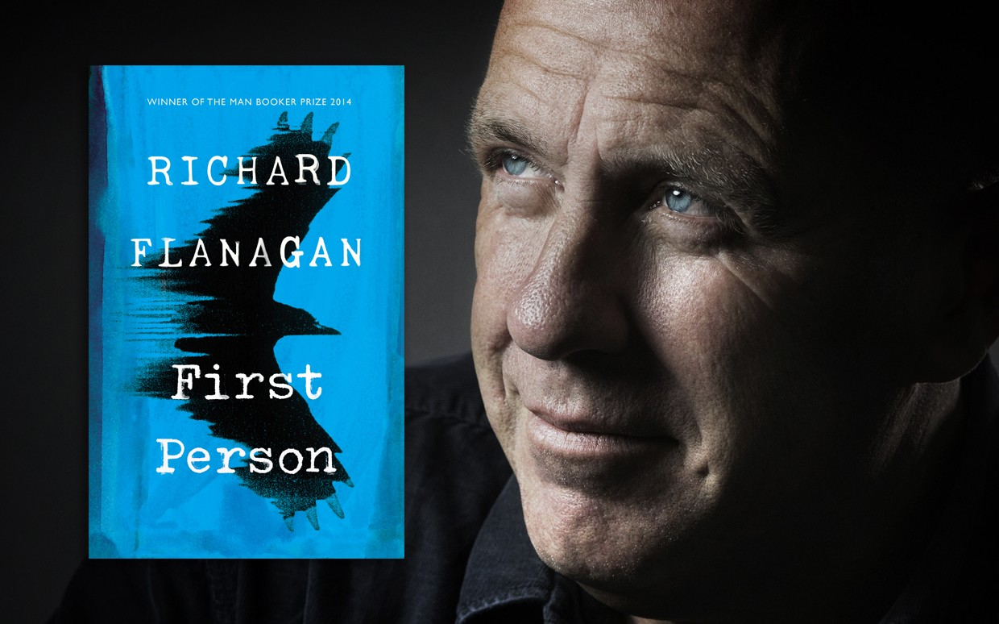

Keeping Calm and Carrying on: WHSmith and Two World Wars
October 8, 2017
Here at WHSmith, we’re proud of our long history of providing books, newspapers and stationery to the people
of Britain – and now, of course, to people all over the world. Since our first shop opened on Little Grosvenor
Street in 1792, we’ve been in operation across three centuries and two of the most pivotal moments of modern
history: World War I and World War II.
During February 2017, WHSmith CEO Stephen Clarke signed the Time to Change Pledge to reduce mental health discrimination.
And while we’re proud of the clear statement that this makes about our attitude as a company towards mental
well-being, the work doesn’t stop there. We’ve made a commitment to take action to tackle stigma and discrimination
around ill mental health in the workplace and our plan aims to have mental health on a par with physical health.
WHSmith CEO, Stephen Clarke commented: “We are all very aware of how we can protect our physical health; but most
of us aren’t so knowledgeable about how to look after our mental health. The workplace can be a vital drive for
change in addressing this issue, which is why we are proud to be making this commitment.”
We caught up with several key figures who have led the way in putting WHSmith’s action plan in place. Watch
the full video below to find out why reducing stigma and providing support for mental well-being is so important
in the workplace, and what WHSmith are doing to reduce mental health discrimination.
"What does the idea of Europe mean to the UK? How deep below the EU do our shared roots run? How much can politics
really touch, and how much can it never transform?"
A unique collection, containing voices from both sides of the Brexit debate, Goodbye Europe delivers a panopticon
of cultural responses, exploring what Europe means to our heitage, history and future, as Britain prepares to leave
the European Union. Here, the Waterstones celebrated authors Henry Marsh and Sarah Perry present their essays from
Goodbye Europe, accompanied by an exclusive introduction from the collection's editor Emad Akhtar.
First Person: A Waterstones Exclusive Interview with Richard Flanagan
November 17, 2017

The follow-up to his Man Booker Prize-Winning triumph, The Narrow Road to the Deep North, Richard Flanagan’s
latest novel, First Person, is a twisting thriller about a penniless writer, Kif Kehlman, offered a golden
ticket in the form of an opportunity to ghost-write the biography of a charismatic, notorious criminal, Siegfried
Heidl.
A novel that questions the nature and value of truth, First Person is a story about the very act of storytelling;
a story for our times that examines the fundamental value of fiction to how we shape and live our lives. In an
exclusive interview for Waterstones, Richard Flanagan discusses truth in a social media age and why he believes
fiction matters, now more than ever.